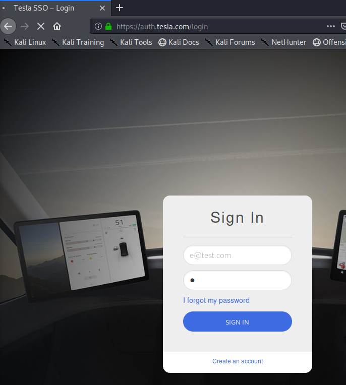

So lets Move to a credential page

Now we open burpsuit and intercept the traffic using proxy:
Give some credentials and hit SIGN IN:
Proxy Must catch the traffic

Send it to intruder

Press Clear

Select the Email line and press add
Select Password line and press add

Go to Payloads
take Payload set 1: Copy paste all the Emails
take Payload set 2: Copy paste all the Passwords

Click Start Attack

Now if we want visually check for correct hits

We copy the return code for wrong credentials

And again start attack
But this time we get an extra column